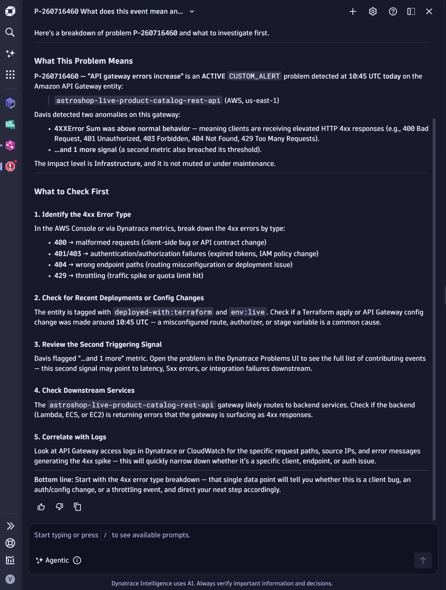
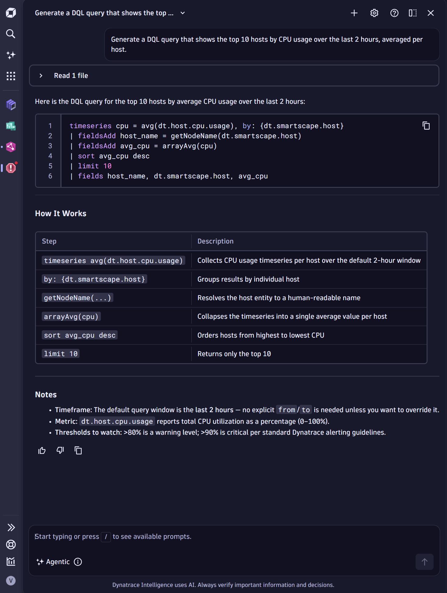

Dynatrace Assist your AI copilot, inside the platform
Ask in plain English. Get grounded answers, DQL, root-cause guidance, and configuration help — without leaving Dynatrace, and without opening a support ticket for every small thing.
Session agenda · how the hour flows
Three acts, one interactive hour
Act 1 · Understand
What Dynatrace Assist is
How it works & why it matters
What you can ask it to do
Act 2 · See it live
Real, validated prompts
Unique power-user use cases
Prompting best practices
Your turn — bring questions
Act 3 · Take it home
Outcomes & industry proof
Privacy & data controls
Getting started this week
Interactive throughout — the tracker at the top shows which act we're in as we go.
Act 1 · concept 1 of 5
The gap between the data and the answer
Too much data, too little time — logs, metrics, traces, events and topology all live in one place, but finding the one answer you need takes effort.
DQL has a learning curve — the query language is powerful, but new users stall on syntax before they get to insight.
Knowledge is siloed — the person who knows the environment is on leave, and the runbook is out of date.
Small questions become tickets — "what does this event mean?" or "which setting do I toggle?" shouldn't need a support case.
Context-switching kills flow — jumping to docs, community, and chat tools breaks the investigation.
Act 1 · concept 2 of 5
What Dynatrace Assist actually is
Dynatrace Assist is the AI assistant built into the platform — the capability formerly known as Davis CoPilot. It uses generative AI to answer questions, explain data, and help you act, all in natural language.
Grounded in your context — it reasons over your environment, Dynatrace documentation, and community knowledge — not generic guesses.
Conversational — you type a question in the chat interface and get an answer, often with source links to verify.
Assistive, not autonomous — generative AI helps you; optional agentic AI can take multi-step actions when an admin enables it.
Think of it as a knowledgeable colleague who has read every doc, knows your topology, and never gets tired of "quick questions."
Act 1 · concept 3 of 5
How it works
You
A plain-English question or request
⇄
Dynatrace Assist
Generative AI reasons and grounds the answer
⇄
Your context
Grail data, topology, docs & community
The model is pre-trained and general; the grounding is what makes answers specific to you. Your observability data is used to answer — never to train the model.
Act 1 · concept 4 of 5
What you can ask it to do
Configuration helpDocumentation lookupGenerate DQLExplain DQLTroubleshoot problemsCorrelate signalsExplain a metricSummarize a problemRecommend next stepsOnboarding & learning
Ten everyday jobs, one chat box. We'll prove the highlighted ones live in a moment.
Act 1 · concept 5 of 5
Why it matters for your team
Expertise, democratized — a first-week engineer can ask the questions a five-year veteran would, and learn from the answer.
Less toil — routine lookups, syntax, and "what does this mean" no longer interrupt senior engineers.
Faster onboarding — new joiners explore the environment by conversation instead of by tribal knowledge.
Fewer tickets — Assist becomes your first line of support for small, self-serviceable questions.
Stay in flow — answers arrive where you already work, with sources to verify.
➚
Concepts are cheap. Let's prove it live.
The next few slides are real prompts I ran against Dynatrace Assist while building this session. Every answer came back grounded and sourced.
Act 2 · the format
How this interactive session runs
I ask, you ask — I'll open each use case with a validated prompt, then you send your own version live.
Read the answer critically — we check the response and, crucially, its source links together.
Bring your real questions — the messier and more real, the better the demo.
No wrong prompts — if Assist misreads intent, that's a learning moment about how to phrase.
Goal for the hour: everyone leaves having asked Dynatrace Assist at least one question that saved them a future ticket.

A real Assist answer — problem P-260716460: what the event means and what to check first, grounded in the live environment.
Act 2 · who benefits
Four people, one chat box
L1 / NOC
First responder
"What does this event mean and what do I check first?"
Developer
Service owner
"Why did my service's failure rate spike after the release?"
Platform / SRE
Environment owner
"Give me the DQL for this, and explain how it works."
New joiner
Week-one engineer
"What are the key services here and how do they depend on each other?"
Different roles, different questions — the same assistant meets all of them where they are.
Platform / SRE
Generate a DQL query
"Generate a DQL query that shows the top 10 hosts by CPU usage over the last 2 hours, averaged per host."
natural language inrunnable DQL outsource links

You go from intent to a working query without memorizing field names or functions.
Assist connects the signals that already live in the platform into one investigation.
Act 2 · beyond the basics
Unique ways teams actually use it
Guided onboarding — new joiners ask "what are the key services here and what depends on what?" and learn the topology by conversation.
Faster dashboards — describe the KPI, get the DQL, drop it straight onto a tile — build monitoring views by talking.
Runbook & blast-radius rehearsal — "what are the upstream and downstream impacts if this service fails?" to pressure-test incident plans before an incident.
Metric literacy — "explain the Apdex score" or "what does this metric mean" turns dashboards into teaching tools.
Language bridge — turn a SQL-shaped question into DQL, or a business question into a query.
Act 2 · power-user plays
Four more that surprise people
Postmortem in one paste — "summarize the root cause, timeline and business impact so I can drop it into a postmortem" → a structured RCA draft, ready to reuse.
Kill the alert noise — "this service alerts too much — how do I reduce overalerting and tune anomaly detection?" → cited, step-by-step tuning guidance.
Speak to the business — "explain this payment slowdown to a non-technical stakeholder in three sentences" → an impact-first summary a manager can read.
Design an SLO — "help me define an SLO for checkout: which SLI, what target, how do I measure it?" → SLI, target, and the DQL to track it.
Every one of these was validated live — grounded in your platform, sourced, and ready to reuse.
Act 2 · coach your users
Prompting best practices
The quality of the answer follows the quality of the prompt. These are the habits to teach even your most non-technical users.
Be specific — name the entity, the metric, and the timeframe.
Give context and your goal — "I'm troubleshooting X and want to achieve Y."
One question at a time — split multi-part asks into separate prompts.
Ask for a format — "as a DQL query", "as a table", or "in plain English".
Use Dynatrace terms — DQL, Smartscape, Davis, problem, SLO — they sharpen intent.
Never paste secrets or PII — describe the shape of data, not the sensitive values.
Keep every prompt under 10,000 characters — split long context into follow-ups.
Iterate and verify — refine with follow-ups, and always open the source links.
Act 2 · vague in, vague out
Same assistant, very different answer
Weak prompt
"why is it slow?"
No entity, no metric, no timeframe, no goal — the assistant has to guess.
Strong prompt
"The checkout-service p95 response time spiked around 14:00 today. Correlate it with recent deployments and downstream dependencies to find the root cause."
Teach the shape of a good prompt, not the exact words — that's what sticks.
▶
Your turn
Open Dynatrace Assist in the platform and fire your first prompt — entity, metric, timeframe, goal. I'll take three from the room right now.
Act 3 · the payoff
Your fastest path to a Dynatrace answer
Dynatrace Assist is the place to ask questions and get immediate answers — especially for product questions that are already answered in the docs.
Ticket
Context gets lost between handoffs → response times stretch → even doc-answerable questions wait in a queue
→
Assist
Ask anything Dynatrace → grounded answer with sources, instantly → full context stays in one conversation
For timely help, ask Dynatrace Assist about anything Dynatrace first — before reaching out to a Dynatrace team or raising a ticket.
Act 3 · outcomes
What teams gain
Toil down — routine lookups and syntax stop consuming senior time.
Handoffs down — fewer "let me ask the expert" detours mid-investigation.
Onboarding up — new engineers become productive in days, not weeks.
Tickets down — small, answerable questions get self-served.
Confidence up — every answer ships with sources you can verify.
Act 3 · industry proof
The industry has already moved
84%
of developers now use or plan to use AI tools in their workflow — up from 76% a year earlier
Stack Overflow · 2025 Developer Survey · 2025
51%
of professional developers use AI tools every dayStack Overflow · 2025 Developer Survey · 2025
54%
say "search for answers" is the task they most rely on AI for — exactly what Assist does in-platform
Stack Overflow · 2025 Developer Survey · 2025
AI-assisted work is no longer emerging — it's the default. The question is whether your assistant is grounded in your data.
Act 3 · the honest counter-beat
Why grounding and sources matter
66%
of developers' biggest AI frustration: answers that are "almost right, but not quite"
Stack Overflow · 2025 Developer Survey
46%
distrust AI accuracy, versus just 33% who trust it — verification is non-negotiable
Stack Overflow · 2025 Developer Survey
This is exactly why Dynatrace Assist grounds answers in your data and cites its sources — so you can trust, then verify. And why 75% of developers say they'd still ask a human when they don't trust an answer. (Stack Overflow, 2025)
Act 3 · privacy & security
Your data stays yours
Not used for training — your metrics, logs, traces and topology are used to answer your question, never to train the underlying model.
Data isolation — your data stays within your Dynatrace environment; it isn't shared across customers.
Encrypted end to end — data is protected in transit and at rest using industry-standard encryption.
Role-based access — existing RBAC applies; users only reason over data they're already allowed to see.
Auditable — interactions are logged, giving a clear trail of who used what and when.
Act 3 · data controls
Admins stay in control
Control
Where
What it governs
Generative & agentic AI
Settings › Dynatrace Intelligence
Turn capabilities on or off for the environment
Granular permissions
IAM / roles
Who can use Assist, who can enable agentic actions
Opt-in for new features
Admin toggle
New AI processing requires explicit opt-in
Data residency
Environment / region
Meets data-locality and compliance needs
The industry is right to ask — 81% of developers worry about data privacy with AI agents (Stack Overflow · 2025 Developer Survey). That's exactly why nothing here is on by default: enablement is an administrator decision, not a surprise.